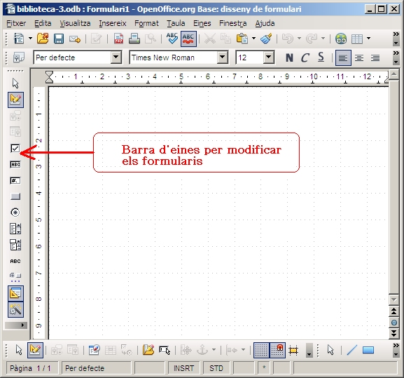
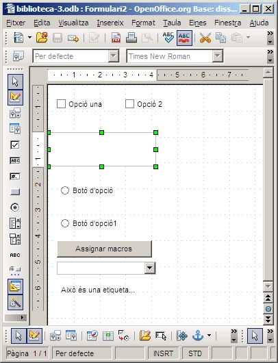
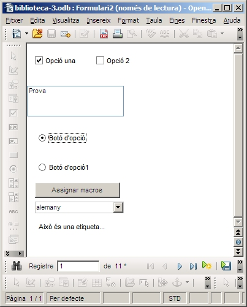

En aquest capítol es veurà el procés de creació de formularis
mitjançant l'ús no de l'assistent si no de crear-lo des de la Vista de
disseny.
Des de la finestra principal de la base de dades d'exemple del
curs, anem a l'opció situada a la part superior de la pantalla que té
per nom: Crear un formulari en vista disseny….
Quan triem aquesta opció ens apareixerà en pantalla un formulari buit
en el qual podrem interactuar mitjançant la utilització dels botons
d'inserció dels diferents controls o elements propis dels formularis
com quadres de texts, desplegables, botons, etc.
En aquesta imatge es poden veure els botons de les barres d'eines
que són utilitzables per a incorporar elements dins del formulari.

A partir d'aquests botons es poden fer elements com els que es
detallen a continuació, tots ells estan inclosos en la següent imatge
per ordre descendents situats a la pantalla:
Tots els elements esmentats es poden veure en mode disseny i en mode vista formulari en les dues imatges següents:



|
|

|
|